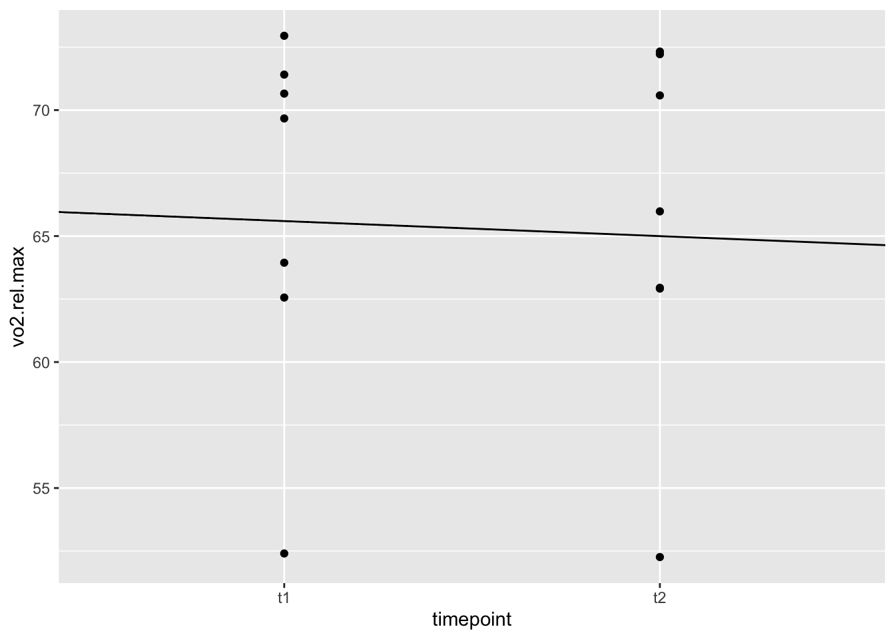

Hensikten med denne studien er å finne ut hvor reproduserbar en VO\(_{2maks}\)-test på sykkel er. Dette er interessant fordi bedre reliabilitet betyr at vi kan stole enda mer på de resultatene vi får fra enkelttester. Da kan vi med stole enda mer på de resultatene vi får når enkelttester i en fysiologisk testlabb brukes for å måle endringer over tid (hopkins2000?).
Faktorer som påvirker reproduserbarheten av testen gjelder dagsvariasjoner hos forsøkspersonene, men også variasjoner i måleinstrumentene, samt hvordan vi instruerer underveis. Derfor var gjennomføringen av testene et sentralt fokus i gjennomføringen for å sikre et best mulig mål på reliabiliteten til testen. Basert på størrelsen på utvalget av testpersoner og vår erfaring med gjennomføring av fysiologisk tester så visste vi på forhånd at vi må være forsiktige med å trekke konklusjoner om målevariasjonen til oksygenanalysatoren som ble benyttet. Men vi får et svar på hvordan reproduserbarheten til testen er med de gitte premissene.
2.2 Metode
2.2.1 Forsøkspersonene
Syv mannlige deltaker ble rekruttert til prosjektet (alder = 25,7 ± 7 år, vekt = 75,7 ± 10,8 kg, høyde = 181,3 ± 6,7 cm). Alle deltakerne trener regelmessig, men erfaring med trening på sykkel varierte innad i gruppa. Ingen av dem hadde noe særlig erfaring med sykkeltestene vi gjennomførte.
library(tidyverse)
── Attaching core tidyverse packages ──────────────────────── tidyverse 2.0.0 ──
✔ dplyr 1.1.3 ✔ readr 2.1.4
✔ forcats 1.0.0 ✔ stringr 1.5.0
✔ ggplot2 3.4.4 ✔ tibble 3.2.1
✔ lubridate 1.9.3 ✔ tidyr 1.3.0
✔ purrr 1.0.2
── Conflicts ────────────────────────────────────────── tidyverse_conflicts() ──
✖ dplyr::filter() masks stats::filter()
✖ dplyr::lag() masks stats::lag()
ℹ Use the conflicted package (<http://conflicted.r-lib.org/>) to force all conflicts to become errors
reablitet2 |>filter(timepoint =="t1") |>select(timepoint, age:bodymass, vo2.rel.max, w.max) |>pivot_longer(cols =!timepoint,names_to ="variabler", values_to ="verdier") |>mutate(variabel =factor(variabler, levels =c("age", "bodyheight", "bodymass", "vo2.rel.max", "w.max"), labels =c("Alder (år)", "Høyde (cm)", "Vekt (kg)", "VO2maks", "Wmaks"))) |>summarise(m =mean(verdier), s =sd(verdier), .by = variabel) |>gt() |>fmt_number(decimals =1) |>cols_merge(columns =c(m, s), pattern ="{1} \u00b1 {2}") |>cols_label(variabel ="") |>cols_label(m ="") |>tab_footnote(footnote =md("*Dataene er presentert som gjennomsnitt ± standardavvik.*")) |>tab_header("Karakteristikker av forsøkspersonene basert på første test")
Karakteristikker av forsøkspersonene basert på første test
Alder (år)
25.7 ± 3.5
Høyde (cm)
181.3 ± 4.6
Vekt (kg)
75.7 ± 7.4
VO2maks
66.2 ± 7.2
Wmaks
410.0 ± 58.9
Dataene er presentert som gjennomsnitt ± standardavvik.
2.2.2 Studiedesign
Prosjektets testdager bestod av fire dager, der halvparten av gruppa ble testen hver dag. Testdag 1 og 2 ble gjennomført som test 1 (t1), mens testdag 3 og 4 ble gjennomført som test 2 (t2). «Hviledagen» til forsøkspersonene ble avholdt til rolig trening eller hvile. Grunnen var for å sikre at de var tilnærmet likt restituert før hver test. Det ble forsøkt å gjøre testdagene så identiske som mulig for alle deltakerne, i form av bruk av samme testleder på hver test (ett unntak pga. logistiske utfordringer for testleder), likt tidspunkt på døgnet ± 2 timer, beskjed om likt måltid og til samme tid før test (hopkins2000?).
2.2.3 Kalibrering - klargjøring til test
Det ble gjennomført kalibrering av oxycon pro før test for hver forsøksperson. Det ble sørget for at luftfuktigheten og temperaturen i rommet stemte overens med oxycon sin estimering. Godkjenning av volum- og gass kalibrering ble satt til 1% for å minimere eventuelle feilmålinger.
I tillegg ble Lode Excalibur-sykkelen likt innstilt for hver person på t1 og t2.
2.2.4 Testprosedyre
Deltakerne startet med en syv minutters lang oppvarming på ergometer sykkel, med en gradvis økning i intensitet. Intensiteten ble styrt etter Borgs 6-20 skala. De syklet 3 min tilsvarende opplevd anstrengelse på 11, 2 min på 13 og 2 min på 15/16 på Borgs 6-20 skala (borg1998?).
Del 1 styrketest: Etter oppvarming gjennomførte deltakerne en kort styrketest, i form av knebøy power test. Den bestod av tre løft med 20 kg, tre løft med henholdsvis 30-, 60- og 75 % av egen kroppsvekt. Målet var å gjennomføre løftet så huritig som mulig, og kraftutviklingen ble målt med en muscle lab hastighetsmåler. Beste forsøk på hver belastning ble tellende. Vi går ikke noe mer inn på styrketesten, fordi det er på sykkeltesten vi har gjort analyser.
Del 2 sykkeltester: Deltakerne gikk direkte fra styrketesten til sykkeltestene. Her gjennomførte de en tredelt test, som først bestod av to submaksimale drag, deretter en VO\(_{2maks}\)-test og til slutt en Maximal Accumulated Oxygen Deficit (MAOD)-test. Grunnen til at vi kjørte de submaksimale dragene var for å estimere okysgenkrav på wattbelasning som ble syklet under MAOD-testen.
Under hele sykkeltesten prøvde vi å kjøre mest mulig lik tilbakemelding og engasjement hver gang. Det var lite tilbakemeldinger under de submaksimale dragene, og mye engasjement og kun nødvendig informasjon under VO\(_{2maks}\)-testen, spesielt mot slutten. Vi ga ingen opplysninger om oksygenopptak (VO2) underveis, men de fikk vite wattbelastning. I tillegg til at de hele tiden kunne se tråkkfrekvensen under alle testene. Vi fikk O\(_2\)-målinger hvert 30.sek som vi noterte ned (både på VO\(_{2maks}\)-testen og MAOD-testen), i tillegg til at vi noterte ned watt, tråkkfrekvens, puls og lengden på de to siste testene.
2.2.4.1 Submaksimale drag
Den submaksimale testen bestod av to drag på fire minutter. For seks av deltakerne ble første belastning på testen gjennomført med en effekt (W) på 100 W og andre belastning på 150 W, mens én deltaker syklet på 75 W og 125 W. Tilpasningene ble gjort for å få en mer optimal test. Forsøkspersonene syklet med neseklype og munnstykket i de siste to minuttene av hvert drag (begynte å ta i da det hadde gått 1,5 min). Deltakerne skulle holde en tråkkfrekvens på 90-100 rpm. Hver belastning ble gjennomført på samme måte, og gikk direkte over i hverandre. Vi spurte om Borgs-skala etter hvert drag. Etter dragene var det to minutter pause der deltakerne satt helt i ro.Tråkkfrekvensen til en bestemt deltaker ble reprodusert på alle andre submaksimale drag og under MAOD-testen så lenge de klarte.
2.2.4.2 VO\(_2maks\)-test
VO\(_{2maks}\)-testen startet for de fleste på 200 W, og økte med 25 W hvert minutt helt til utmattelse. For deltakeren som hadde litt lavere effekt på de submaksimale dragene startet VO\(_{2maks}\)-testen på 150 W. Testen var ferdig da tråkkfrekvens var < 60 rpm. Det var fri tråkkfrekvens og vi målte oksygenopptaket under hele testen. Vi spurte om Borgs-skala rett etter VO\(_{2maks}\)-testen. Etter avsluttet test fikk forsøkspersonen fem minutter pause. Det første minuttet etter avsluttet test satt personen helt i ro, mens de neste fire minuttene ble gjennomført som rolig sykling på 50 W. Valgfri tråkkfrekvens, men den skulle være lik under pausen på t2.
2.2.4.3 MAOD-test
MAOD-testens starteffekt baserte seg på VO\(_{2maks}\)-testen. Effekten de startet på var den siste belastningen deltakeren syklet 30.sek eller mer på under VO2maks-testen. Den belastningen som ble brukt under t1 ble også brukt på t2 uavhengig av hvordan de presterte på VO\(_{2maks}\)-test ved t2. Deltakerne syklet med neseklype og munnstykket under hele testen, og startet med “flying start” fra 50 W. Belastningen ble satt klart på maskinen, slik at den var klar når testleder ga beskjed om at testen skulle starte. Deltakerne syklet så lenge som mulig, og testen var over når tråkkfrekvensen var < 60. Vi spurte om Borgs-skala rett etter avsluttet test.
2.2.5 Datainnsamling og -behandling
Etter å ha gjennomført testene samlet vi inn dataene vi skulle bruke for å gjøre statistiske analyser. Vi noterte ned VO2 på de submaksimale dragene, og regnet ut VO2.rel.max og VO2.max på VO2maks-testen i excel. Samtidig noterte vi ned andre verdifulle variabler etter test, slik som hr.max, W.max, rer.max, bf.max, VE.max, hvor lenge personen syklet, og hvilken watt personen avsluttet på, samt opplevd anstrengelse [borg1998].
Etter MAOD-testen regnet vi ut VO2.max, oksygenkravet ved belastning under MAOD-test (L/min), det totale okysgenkravet som måtte dekkes (L), akkumulert oksygenopptak på testene (L), akkumulert oksygengjeld og prosent av arbeidet som ble dekket anaerobt (%). Samtidig noterte vi ned hvor lenge personen syklet (i sekunder), makspuls og opplevd anstrengelse [borg1998].
Alle data i resultatkapittelet er presentert som gjennomsnitt ± standardavvik.
2.3 Resultater
For relativ VO\(_{2maks}\) var differansen mellom testene 0.62 ± 2.41 \(ml·kg^{-1}·min^{-1}\). Med en typisk målefeil på 1.7, og en variasjonskoefisient (cv) på 2.6. I prosent var det 0.94 ± 3.65 % forskjell.
For W\(_{maks}\) og ventilasjonen er differansen mellom testene henholdsvis 5.71 ± 13.80 W og 2.21 ± 11.42 l/min. Den typiske målefeilen var hhv. 9.8 og 8.1, mens cv var 2.4 og 4.
Figuren under viser relativ VO\(_{2maks}\) ved de to testene. Og linjen går fra gjennomsnittet ved t1 (66.2 ± 7.2) til gjennomsnittet ved t2 (65.6 ± 7.1).

2.4 Diskusjon
2.4.1 Diskusjon av resultater
8 forsøkspersoner er et lite utvalg når vi skal måle reliabiliteten til en test [hopkins2000]. Dette gjør at det er mer tilfeldigheter som kan påvirke resultatene våre. Ved første test var VO\(_{2maks}\) på 66,2 ± 7,2 ml/kg/min, noe som gjør at de kan defineres som godt trente. Godt trente utøvere vil også produsere høyere wattverdier. Når både oksygenopptak og wattverdier er høyere vil det være desto mer beskrivende å se på variasjonskoefisienten som er prosentvis av gjennomsnittet. Den var på 2.6 og 2.4 for henholdsvis VO\(_{2maks}\) og W\(_{maks}\). Med et lite utvalg blir det vanskelig å konkludere noe om reliabiliteten til testen, men det ser ut som vi har gjennomført testene godt med de feilkildene som nevnes i neste delkapittel.
2.4.2 Tiltak for å sikre god reliabilitet
For å oppnå en størst mulig grad av validitet og reliabilitet er det nødevndig å ta stilling til ytre variabler som kan påvirke resultatet. Ved å ta hensyn til potensielle forstyrrende variabler reduseres risikoen for feilmålinger, og gjør funnene mer pålitelige (halperin2015?).
For å sikre en god reliabilitet på de fysiologiske testene gjorde vi flere tiltak for å redusere risikoen for forstyrrende variabler som kan påvirke resultatene. For det første ble begge testene kjørt på så nøyaktig lik måte som mulig, med en standardisert protokoll. Testene for hver forsøksperson ble avholdt på omtrent samme tidspunkt (± 2 timer). Vi ga også beskjed om at de bare kunne trene rolig dagen før t1, og dagen i mellom testene. På den måten sikret vi at ingen var treningspåvirket og forhåpentligvis likt restituert før hver test. Deltakerne fikk også beskjed om at siste måltid før begge testene skulle være like, og til omtrent samme tidspunkt.
Vi kjørte også samme tråkkfrekvensen ved første submaksimale belastningstrinn og ved MAOD-testen, og dette ble kopiert ved t2. Det var lik belastning og lengde på pause før hver MAOD-test begge dager uansett utfall på VO\(_{2maks}\)-testen. I tillegg ble hele sykkeltesten gjennomført sittende.
Vi valgte også å ha samme testleder for hver enkelt forsøksperson ved både t1 og t2. Den muntlige oppmuntringen og tilbakemeldingene underveis på testene var lik, og vi sørget for å gi like instruksjoner om utførelsen av testene og målet med hver test. Det ble også kjørt kalibrering av oxycon pro før hver test, og vi satte godkjent kalibrering på volum til ± 1 %, og godkjent kalibrering av gass med en differanse på maksimalt ± 1.0 %. I vårt utvalg av forsøkspersoner, hadde alle gjennomført testing på et fysiologisk testlabratorie før. Så dei var kjent med å puste gjennom slage, men det var liten eller ingen erfaring ved slik testing på sykkel. Dermed ble t1 mye læring for mange av personene, så for å sikre endå betre realbilitet hadde det vert viktig å lett forsøkspersone bli kjent med det å gjennomføre en sykkeltest på forhånd. Et punkt på dette som var usikkert for flere var hvordan de ulike belastningene føltes noe som kunne vert et enkelt tiltak å gjennomføre.
Studiens testledere hadde også en noe ulik erfaring ved å være testledere. No som ført til noen feil i gjennomføringen av protokollen. Dette var feil som forsøkspersonene ikke oppfattet under veis i deres tester, men som kan ha hatt innvirkning på testresultatet. Vi ser at ved senere studier vil det være hensiktsmessig for reabiliteten til testene, at vi gjennomfører pilottesting, for å bli bedre kjent med gjennomføring. Dette vil i stor grad være det som i literaturen blir referert til som tilfeldig forandring.